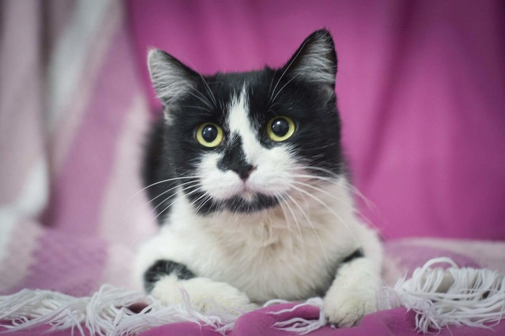
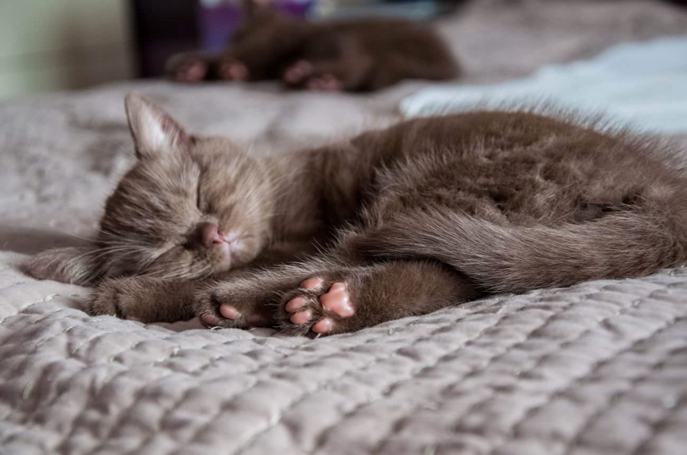
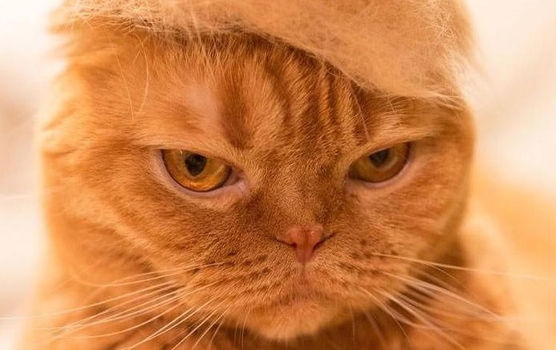
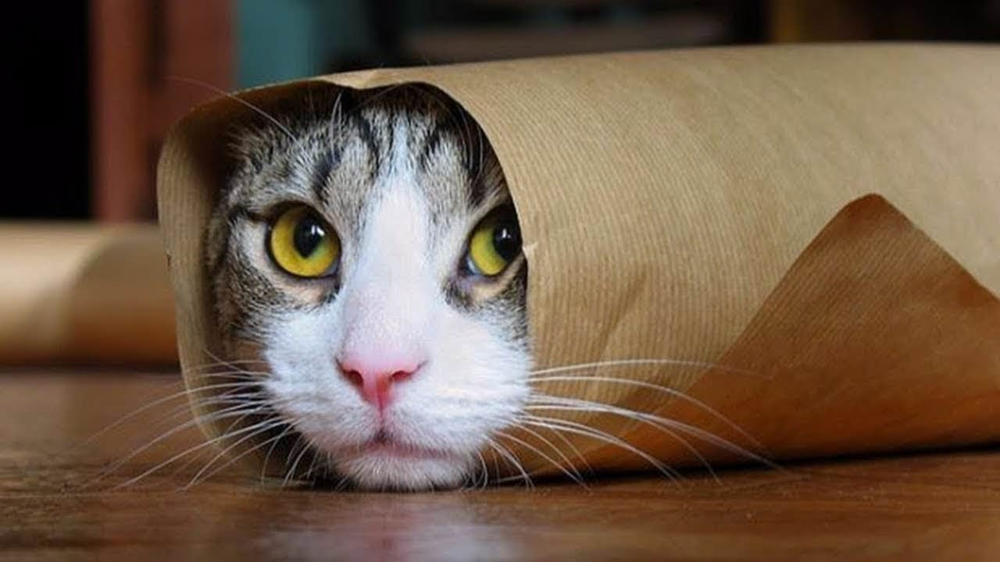
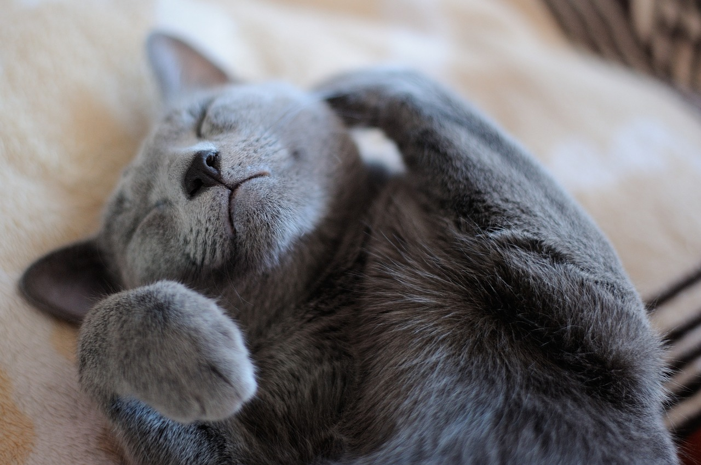
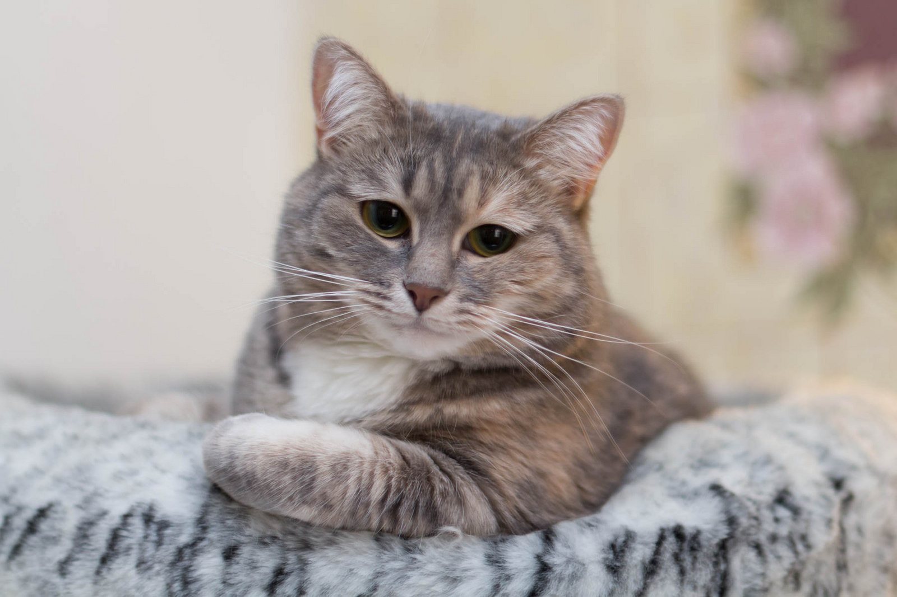
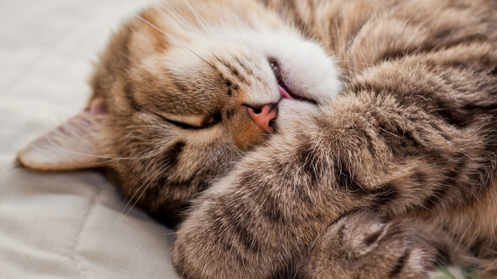
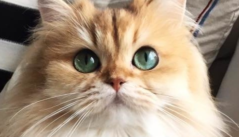
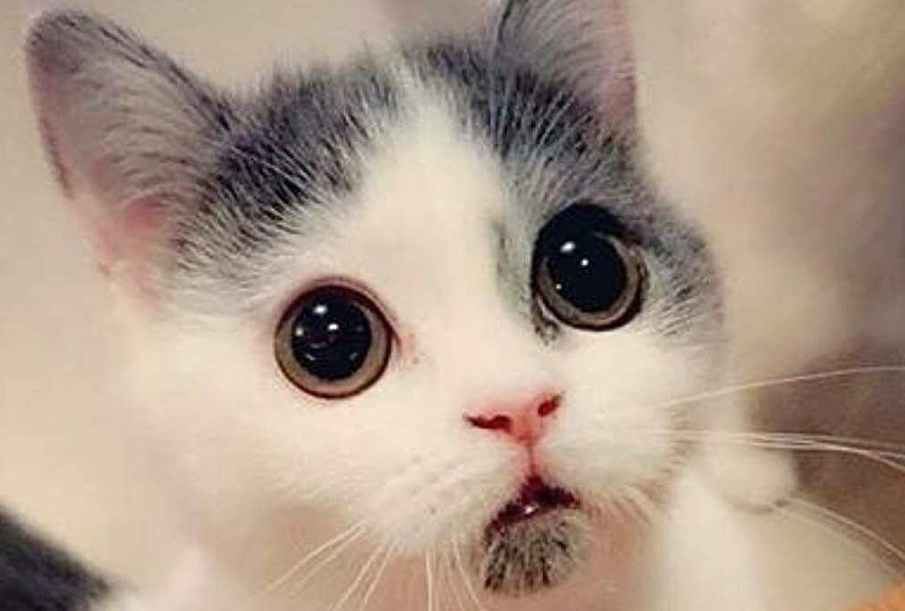
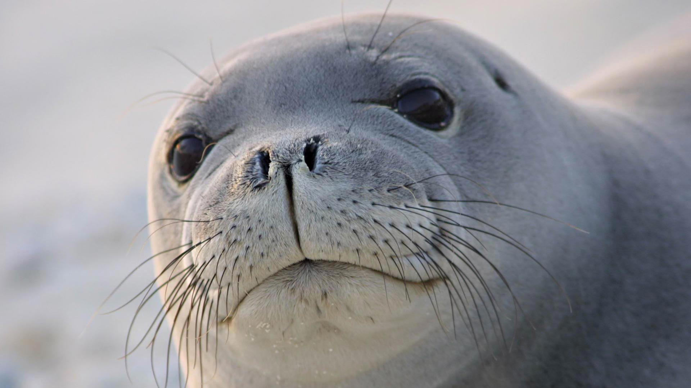

Возраст: около 6 месяцев
Порода: нет
Болезни: нет
Статус: ищет хозяина
Пол: мужской
Подробная информация: Котенок неприхотлив, кушает даже овсяную кашу.
Молчаливый, почти не мяукает, очень ручной. К котенку прилагается
игрушка-мячик, туалет, и корм на первое время.

Возраст: 5 месяцев
Порода: нет
Болезни: нет
Статус: ищет хозяина
Пол: женский
Подробная информация: Дайра очень-очень ласковая и человеко-ориентированная
кошечка-подросток, ей необходимы внимание и забота, но и в долгу она не останется!
Серыми осенними вечерами будет греть вас обнимашками и намурлыкивать песенки на ушко.

Возраст: 12 месяцев
Порода: хайленд-фолд
Болезни: нет
Статус: ищет хозяина
Пол: мужской
Подробная информация: Его царственную особу нужно любить и ценить, кормить строго
определенным кормом, предоставить минимум два больших лотка. Обязательно наличие дивана,
где можно возлежать в красивых позах. Обязательно уделять внимание, он общается только
на крайне серьезные темы и отношения требует соответственного: как к личности.

Возраст: около 7 месяцев
Порода: нет
Болезни: нет
Статус: ищет хозяина
Пол: мужской
Подробная информация: Невероятно контактный, ласковый.
Воспитан в лучших кошачьих традициях: лоток на 5+, когтеточка так же.
Составит в любом деле компанию, может с вами: спать, играть, есть,
сидеть на плече, работать (ну вы работаете, а он контролирует).

Возраст: 8 месяцев
Порода: нет
Болезни: нет
Статус: ищет хозяина
Пол: мужской
Подробная информация: Он молод, здоров и красив как кошачий Бог. Активный
и неутомимый игрун. Любит играть со струей воды и не боится никого.
Дружит с собаками и кошками.

Возраст: 14 месяцев
Порода: нет
Болезни: нет
Статус: ищет хозяина
Пол: женский
Подробная информация: Любознательная, ласковая, любит играть с кошачьими игрушками.
Не капризная. Воспитанная и ухоженная. Ходит в лоточек с наполнителем.
Привита, оформлен ветпаспорт.

Возраст: 5 месяцев
Порода: нет
Болезни: нет
Статус: ищет хозяина
Пол: женский
Подробная информация: Милая мурчалка по имени Мурена. Этой полосатой красавице
нужны ласковые руки и доброе отношение. Она всегда сможет поднять вам настроение.
Мурена может быть игривой и веселой, а так же охотно будет тихо
мурчать рядом, создавая уют. Охотно станет хранительницей семейного
очага и украшением вашего дома.

Возраст: около 17 месяцев
Порода: нет
Болезни: нет
Статус: ищет хозяина
Пол: мужской
Подробная информация: Симпатяга Анжело. Полностью здоров, привит.
Лоток освоен отлично. Очень ласковый к людям. Готов часами нежиться на ручках,
обниматься и мурлыкать. К другим кошкам относится строго, всех «строит».
Собак не боится, но и дружбы с ними не заводит.

Возраст: 3 месяца
Порода: нет
Болезни: нет
Статус: ищет хозяина
Пол: мужской
Подробная информация: Не у каждого есть котик Барсик! Только у тех, кому повезет.
Барсик умеет замечательно громко мурлыкать, обожает ласку и подвижные игры:
никто с такой ловкостью не сумеет поймать бантик на веревочке! От Барсика не
сумеет убежать даже лучик от лазерной указки.

Возраст: 34 месяца
Порода: нет
Болезни: нет
Статус: ищет хозяина
Пол: мужской
Подробная информация: Красавчик Цезарь совсем еще ребёнок.
У Цезаря необыкновенно выразительный, трогательный взгляд,
посмотрит и, кажется, сейчас заговорит. Нежный, чуткий, ласковый Цезарь очень
любит и поиграть, он неутомимый исследователь.
Любит большие открытые водоемы, но готов уживаться и в обычном бассейне с морской водой.